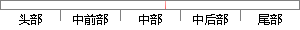

如果任务没有被挂起，那么该任务就会进入就绪状态。
片段位置图

相似结果
相似片段：当某个任务的运算个数大于可重构单元个数的时候,此...如果能使捕获过程在相位域并行化,那么搜索总量就会...运算任务进入就绪状态,当前运行的任务被挂起,这样就...
| 标题 | 《基于可重构技术的GPS基带处理算法研究》 |
| 对比库 | 中国学位论文全文数据库 |
| 作者 | 何涛 |
| 机构 | 东南大学 |
| 分类 | 微电子学与固体电子学 |
| 年份 | 2010 |
| 相似率 | 90% （严重抄袭） |
※ 片段修改建议 ※
近似词参考：- 就绪：停当
- 任务：使命 义务
- 状态：状况
- 如果：若是 假如 要是
- 那么：那末
系统自动生成语句：若是使命没有被挂起，那末该使命就会进入停当状况。
注：本片段修改建议为系统自动生成，仅供参考。